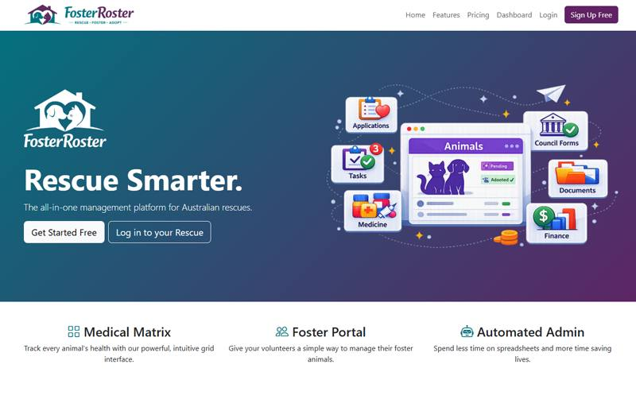

FosterRoster
Manual Rescue Ops→Unified Platform
Problem
Independent animal rescues run intake, fostering, medical care, litters, contracts and finances across scattered spreadsheets, paper forms and group chats — nothing talks to each other, and none of it scales past a handful of volunteers.
Logic
A configurable multi-tenant SaaS platform generalising the workflows built for individual rescues into one product — animal roster, litter tracking, medical records, adoption pipeline, financials and operations, deployable white-labelled to any Australian rescue.
Result
One login for everything — from a newborn litter's daily weigh-ins to a signed, invoiced adoption contract — with self-serve foster access and reporting that used to require a bespoke build per organisation.

View the full feature setHide the full feature set
Animal Management
- Multi-View Roster Cards, list or compact views, grouped by species, status or carer
- Guided Intake Step-by-step wizard, plus a fast multi-littermate intake flow
- Weigh The Litter Wheel-based nursery weigh-in tool with growth charts per kitten/pup
- Treatment Matrix Vaccinations, worming, desexing and medicine inventory in one view
People & CRM
- Unified Contacts Team (staff, carers, vets, donors) and Customer views in one directory
- Adaptive Profiles A contact's page reshapes around their foster or adoption history automatically
- Household Profiling Logistics captured per household, not just per person
- Communications Timeline Every contact's history in one scrollable thread
Adoption Pipeline
- Public Adoption Portal Branded, per-organisation, fed straight from the live roster
- Application Review Online applications with a built-in staff review workflow
- E-Signed Contracts Adoption, foster, transfer and surrender — signed on screen, auto-filed
- Auto-Invoicing The adoption fee is invoiced the moment a contract is signed
Financials
- Expense Ledger Filterable payment/expense history with PDF receipt generation
- Cash Reconciliation A "banked date" field keeps physical cash handling auditable
- Split Expenses One vet invoice divided automatically across a whole litter
- Financial History Per-animal and per-person views, not just one master ledger
Operations & Platform
- Task Management Due dates, assignment and recurrence for rescue chores
- Compliance Tracking State-based council and legal requirements built in
- Custom Dashboard Drag-to-reorder cards with multiple density modes
- Role-Based Access Capability-level staff permissions, invited by email, per-org data isolation